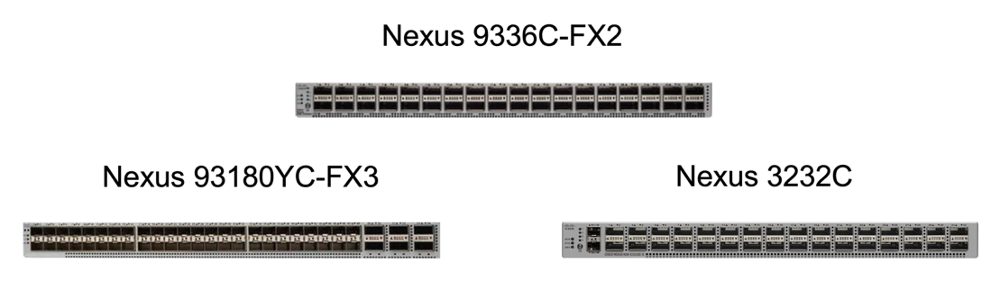
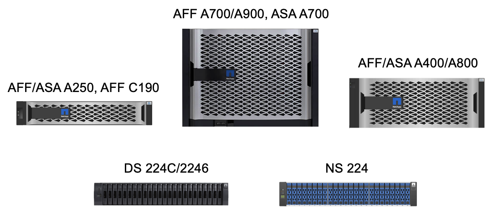

Demander de modifier un document
Demander de modifier un document Modifier sur GitHub
Modifier sur GitHub Guide des contributeurs
Guide des contributeursSolution FlexPod SM-BC
Contributeurs
Présentation de la solution
À un haut niveau, la solution FlexPod SM-BC est composée de deux systèmes FlexPod, situés sur deux sites séparés par une certaine distance, connectés et associés, afin d’offrir une solution de data Center hautement disponible, extrêmement flexible et extrêmement fiable, capable d’assurer la continuité de l’activité malgré une défaillance sur un site.
Outre le déploiement de deux nouvelles infrastructures FlexPod pour créer une solution FlexPod SM-BC, la solution peut également être implémentée sur deux infrastructures FlexPod existantes compatibles avec SM-BC ou en ajoutant un nouveau FlexPod pour être homologue avec un FlexPod existant.
Les deux systèmes FlexPod d’une solution FlexPod SM-BC n’ont pas besoin d’être identiques dans les configurations. Cependant, les deux clusters ONTAP doivent être des mêmes familles de stockage, deux systèmes AFF ou deux systèmes ASA, mais pas nécessairement du même modèle matériel. La solution SM-BC ne prend pas en charge les systèmes FAS.
Les deux sites FlexPod nécessitent une connectivité réseau qui répond aux exigences de bande passante et de qualité de service de la solution. Ils offrent une latence aller-retour inférieure à 10 millisecondes (10 ms) entre les sites, comme l’exige la solution ONTAP SM-BC. Pour la validation de cette solution FlexPod SM-BC, les deux sites FlexPod sont interconnectés via un réseau de couche 2 étendu dans le même laboratoire.
La solution NetApp ONTAP SM-BC assure une réplication synchrone entre les deux clusters de stockage NetApp pour une haute disponibilité et la reprise après incident dans un campus ou une zone métropolitaine. Le médiateur ONTAP déployé sur un troisième site surveille la solution et permet un basculement automatique en cas d’incident sur site. La figure suivante fournit une vue d’ensemble des composants de la solution.

Avec la solution FlexPod SM-BC, vous pouvez déployer un cloud privé basé sur VMware vSphere sur une infrastructure distribuée mais intégrée. La solution intégrée permet de coordonner plusieurs sites en tant qu’infrastructure unique afin de protéger les services de données contre différents scénarios de point de défaillance unique et une défaillance complète du site.
Ce rapport technique met en évidence certaines des considérations de conception de bout en bout de la solution FlexPod SM-BC. Les professionnels sont encouragés à obtenir des informations de référence disponibles dans les CVD et les NVA d’FlexPod pour d’autres détails d’implémentation de la solution FlexPod.
Bien que la solution ait été validée en déployant deux systèmes FlexPod basés sur les meilleures pratiques de FlexPod, comme décrit dans les CVD, elle tient compte des exigences de la solution SM-BC. La solution FlexPod SM-BC déployée décrite dans ce rapport a été validée pour la résilience et la tolérance aux pannes dans différents scénarios de défaillance, ainsi qu’une simulation de défaillance d’un site.
De la solution
La solution FlexPod SM-BC est conçue pour répondre aux exigences clés suivantes :
-
Continuité de l’activité pour les applications et les services de données stratégiques en cas de défaillance complète du data Center
-
Placement flexible des workloads distribués avec mobilité des workloads dans l’ensemble des data centers
-
Affinité avec les sites dans lesquels les données des machines virtuelles sont accessibles localement, à partir du même site de data Center, pendant les opérations normales
-
Restaurez rapidement vos données sans aucune perte en cas de défaillance d’un site
Composants de la solution
Composants de calcul Cisco
Cisco UCS est une infrastructure informatique intégrée qui offre des ressources informatiques unifiées, une structure unifiée et une gestion unifiée. Elle permet aux entreprises d’automatiser et d’accélérer le déploiement des applications, y compris la virtualisation et les charges de travail sans système d’exploitation. Cisco UCS prend en charge de nombreuses utilisations dans le cadre du déploiement, notamment les bureaux distants, les succursales, les data centers et le cloud hybride. Selon les exigences spécifiques de la solution, la mise en œuvre des ressources de calcul FlexPod et Cisco peut utiliser différents composants à différentes échelles. Les sous-parties suivantes fournissent des informations supplémentaires sur certains composants UCS.
Serveur UCS et nœud de calcul
La figure suivante présente quelques exemples de composants de serveur UCS, dont des serveurs en rack UCS C-Series, des châssis UCS 5108 avec serveurs lames B-Series et le nouveau châssis UCS X9508 avec nœuds de calcul X-Series. Les serveurs en rack Cisco UCS C-Series sont disponibles dans un ou deux formats d’unité de rack (RU), avec processeurs Intel et AMD, ainsi que dans plusieurs vitesses de CPU, cœurs, mémoire et options d’E/S. Les serveurs lames Cisco UCS B-Series et les nouveaux nœuds de calcul X-Series sont également disponibles avec plusieurs options de processeur, de mémoire et d’E/S, et tous sont pris en charge dans l’architecture FlexPod pour répondre aux diverses exigences de l’entreprise.

En plus des serveurs rack M6 nouvelle génération C220/C225/C240/C245, des serveurs lames B200 M6 et des nœuds de calcul X210c illustrés dans cette figure, les générations précédentes de serveurs rack et lame peuvent également être utilisées si elles sont toujours prises en charge.
Module d’E/S et module de structure intelligente
Le module d’E/S (IOM)/Fabric Extender et le module de structure intelligente (IFM) offrent une connectivité de structure unifiée pour le châssis de serveurs lames Cisco UCS 5108 et le châssis Cisco UCS X9508 X-Series, respectivement.
La quatrième génération d’UCS IOM 2408 possède huit ports Ethernet unifiés 25 G pour la connexion du châssis UCS 5108 avec Fabric Interconnect (FI). Chaque 2408 dispose de quatre ports Ethernet de fond de panier 10 G par le biais du fond de panier central à chaque serveur lame du châssis.
Le contrôleur UCSTM X 9108 25G IFM est doté de huit ports Ethernet unifiés 25-G pour la connexion des serveurs lames dans le châssis UCS X9508 avec des interconnexions de fabric. Chaque 9108 dispose de quatre connexions 25-G vers chaque nœud de calcul UCS X210c dans le châssis X9108. Le 9108 IFM fonctionne également de concert avec le Fabric Interconnect pour gérer l’environnement du châssis.
La figure suivante représente les générations d’IOM UCS 2408 et antérieures pour le châssis UCS 5108 et le module 9108 IFM pour le châssis X9508.

Interconnexions de fabric UCS
Les interconnexions de fabric Cisco UCS (IF) offrent une connectivité et une gestion à l’ensemble du système Cisco UCS. Généralement déployées en tant que paire active/active, les interfaces de contrôle de la qualité du système intègrent tous les composants dans un domaine de gestion unique et hautement disponible, contrôlé par Cisco UCS Manager ou Cisco Intersight. Il s’agit d’une structure unifiée unique pour le système avec une faible latence et sans perte, des commutateurs coupe-circuit qui prennent en charge le trafic LAN, SAN et de gestion à l’aide d’un seul jeu de câbles.
Il existe deux variantes pour les IFI Cisco UCS de quatrième génération : UCS FI 6454 et 64108. Ils comprennent la prise en charge de ports Ethernet 10/25 Gbit/s, de ports Ethernet 1/10/25 Gbit/s, de ports Ethernet UP-link 40/100 Gbit/s et de ports unifiés prenant en charge les ports Ethernet 10/25 Gbit/s ou Fibre Channel 8/16/32 Gbit/s. La figure suivante montre les IFI Cisco UCS de quatrième génération, ainsi que les modèles de troisième génération également pris en charge.


|
Pour prendre en charge le châssis Cisco UCS X-Series, des interconnexions de fabric de quatrième génération configurées en mode géré InterSight (IMM) sont requises. Cependant, le châssis Cisco UCS 5108 B-series peut être pris en charge aussi bien en mode IMM qu’en mode géré UCSM. |
|
|
Le système UCS FI 6324 utilise le format de module d’E/S et est intégré dans un châssis UCS Mini pour les déploiements qui requièrent uniquement un petit domaine UCS. |
Cartes d’interface virtuelle UCS
Les cartes d’interface virtuelle Cisco UCS (VICS) unifient la gestion des systèmes et la connectivité LAN et SAN pour les serveurs rack et lames. Il prend en charge jusqu’à 256 périphériques virtuels, soit en tant que cartes d’interface réseau virtuelles (vNIC), soit en tant que cartes de bus hôte virtuelles (vHBA) utilisant la technologie Cisco SingleConnect. Suite à la virtualisation, les cartes VIC simplifient considérablement la connectivité réseau et réduisent le nombre d’adaptateurs réseau, de câbles et de ports de commutation nécessaires au déploiement de la solution. La figure suivante présente certaines des Cisco UCS VICS disponibles pour les serveurs B-Series et C-Series, ainsi que les nœuds de calcul X-Series.

Les différents modèles d’adaptateurs prennent en charge différents serveurs lame et rack avec différents nombres de ports, vitesses de port et formats de LAN modulaire sur la carte mère (mLOM), cartes mezzanine et interfaces PCIe. Les adaptateurs prennent en charge certaines combinaisons de Ethernet 10/25/40/100-G et FCoE (Fibre Channel over Ethernet). Ils intègrent la technologie CNA (Converged Network adapter) de Cisco, prennent en charge un ensemble complet de fonctionnalités et simplifient la gestion des adaptateurs et le déploiement des applications. Par exemple, le VIC prend en charge la technologie VM-FEX (Data Center Virtual machine Fabric Extender) de Cisco, qui étend les ports d’interconnexion de structure Cisco UCS aux machines virtuelles, simplifiant ainsi le déploiement de la virtualisation des serveurs.
Avec une combinaison de Cisco VIC dans les configurations mLOM, mezzanine, module d’extension de port et carte pont, vous pouvez tirer pleinement parti de la bande passante et de la connectivité disponibles pour les serveurs lames. Par exemple, en utilisant les deux liaisons 25 G sur le VIC 14825 (mLOM) et 14425 (mezzanine) et le 14000 (carte de pont) pour le nœud de calcul X210c, la bande passante combinée VIC est de 2 x 50-G + 2 x 50-G, Ou 100 G par fabric/IFM et 200 G au total par serveur avec la configuration IFM double.
Pour plus d’informations sur les gammes de produits Cisco UCS, les spécifications techniques et la documentation, consultez le "Cisco UCS" site web pour information.
Composants de commutation Cisco
Commutateurs Nexus
FlexPod utilise des commutateurs Cisco Nexus Series afin de fournir une structure de commutation Ethernet pour les communications entre Cisco UCS et les contrôleurs de stockage NetApp. Tous les modèles de commutateurs Cisco Nexus actuellement pris en charge, y compris les gammes Cisco Nexus 3000, 5000, 7000 et 9000, sont pris en charge pour le déploiement de FlexPod.
Dans le choix d’un modèle de switch pour un déploiement FlexPod, de nombreux facteurs sont à prendre en compte, notamment les performances, la vitesse de port, la densité de port, la latence de commutation, Et des protocoles tels que la prise en charge ACI et VXLAN, pour vos objectifs de conception ainsi que la durée de prise en charge des commutateurs.
La validation de nombreux CVD récents de FlexPod utilise des commutateurs Cisco Nexus 9000, tels que les Nexus 9336C-FX2 et Nexus 93180YC-FX3. Ils offrent des ports haute performance 40/100G et 10//25G, une faible latence et une efficacité énergétique exceptionnelle dans un format compact 1U. Des vitesses supplémentaires sont prises en charge via des ports de liaison ascendante et des câbles de dérivation. La figure ci-dessous présente quelques switchs Cisco Nexus 9k et 3K, notamment les Nexus 9336C-FX2 et Nexus 3232C utilisés pour cette validation.

Voir "Commutateurs pour data Center Cisco" Pour plus d’informations sur les commutateurs Nexus disponibles ainsi que leurs spécifications et leurs documentations.
Switchs MDS
Les switchs de fabric Cisco MDS 9100/9200/9300 sont des composants facultatifs pour l’architecture FlexPod. Ces commutateurs sont extrêmement fiables, hautement flexibles, sécurisés et offrent une visibilité sur le flux du trafic dans le maillage. La figure suivante présente quelques exemples de commutateurs MDS qui peuvent être utilisés pour créer des structures SAN FC redondantes pour une solution FlexPod, afin de répondre aux besoins des applications et de l’entreprise.

Les commutateurs Cisco MDS 9132T/9148T/9396T haute performance 32G Multilayer Fabric sont économiques et extrêmement fiables, flexibles et évolutifs. Les fonctionnalités avancées du réseau de stockage facilitent la gestion et sont compatibles avec l’ensemble de la gamme Cisco MDS 9000 pour une implémentation SAN fiable.
Ces fonctionnalités de télémétrie et d’analytique SAN dernière génération sont intégrées à cette plateforme matérielle nouvelle génération. Les données de télémétrie extraites de l’inspection des en-têtes de trame peuvent être transmises à une plateforme de visualisation analytique, y compris Cisco Data Center Network Manager. Les commutateurs MDS qui prennent en charge Fibre Channel 16 Gbit/s, comme le MDS 9148S, sont également pris en charge dans FlexPod. De plus, les commutateurs multiservice MDS, comme le MDS 9250i, qui prend en charge les protocoles FCoE et FCIP en plus du protocole FC, font également partie de la gamme de solutions FlexPod.
Sur les commutateurs MDS semi-modulaires tels que le 9132T et le 9396T, des licences de port et de module d’extension de port supplémentaires peuvent être ajoutées pour prendre en charge la connectivité de périphérique supplémentaire. Sur les commutateurs fixes comme le 9148T, des licences de port supplémentaires peuvent être ajoutées si nécessaire. Cette flexibilité de facturation à l’utilisation fournit une composante des dépenses d’exploitation qui permet de réduire les dépenses d’investissement relatives à la mise en œuvre et à l’exploitation d’une infrastructure SAN de commutateur MDS.
Voir "Commutateurs de structure Cisco MDS" Pour plus d’informations sur les commutateurs MDS Fabric disponibles, consultez le "NetApp IMT" et "Liste de compatibilité matérielle et logicielle Cisco" Pour obtenir la liste complète des commutateurs SAN pris en charge.
Composants NetApp
Les contrôleurs NetApp AFF ou ASA redondants qui exécutent le logiciel ONTAP 9.8 ou des versions ultérieures sont requis pour créer une solution FlexPod SM-BC. La dernière version d’ONTAP, actuellement 9.10.1, est recommandée pour le déploiement de SM-BC afin de tirer parti des innovations, des performances et des améliorations de qualité continues de ONTAP, ainsi que du nombre maximal d’objets pour la prise en charge de SM-BC.
Les contrôleurs NetApp AFF et ASA, dotés de performances et d’innovations de pointe, assurent la protection des données d’entreprise et proposent des fonctionnalités avancées de gestion des données. Les systèmes AFF et ASA prennent en charge les technologies NVMe de bout en bout, y compris les disques SSD connectés via NVMe et la connectivité hôte front-end NVMe over Fibre Channel (NVMe/FC). Vous pouvez améliorer le débit des workloads et réduire la latence d’E/S en adoptant une infrastructure SAN NVMe/FC. Toutefois, les datastores NVMe/FC ne peuvent actuellement être utilisés que pour les charges de travail qui ne sont pas protégées par SM-BC, car la solution SM-BC ne prend actuellement en charge que les protocoles iSCSI et FC.
NetApp AFF et les contrôleurs de stockage ASA fournissent également une base solide pour le cloud hybride qui permet aux clients de profiter des avantages de la mobilité transparente des données grâce à NetApp Data Fabric. Data Fabric vous permet d’accéder facilement aux données de la périphérie jusqu’au cœur, où elles sont générées, ainsi qu’au cloud, pour exploiter l’élasticité de calcul, d’IA et DE ML des informations exploitables à la demande.
Comme le montre la figure suivante, NetApp propose différents contrôleurs de stockage et tiroirs disques afin de répondre à vos exigences en termes de performances et de capacité. Pour plus d’informations sur les fonctionnalités et les spécifications des contrôleurs NetApp AFF et ASA, consultez le tableau suivant et consultez les liens vers les pages produits.

| Famille de produits | Caractéristiques techniques |
|---|---|
Gamme AFF |
|
Gamme ASA |
Consulter le "Documentation relative aux tiroirs disques et aux supports de stockage NetApp" et "NetApp Hardware Universe" pour en savoir plus sur les tiroirs disques et les tiroirs disques pris en charge pour chaque modèle de contrôleur de stockage.
Topologies de solution
Les solutions FlexPod sont flexibles en topologie et peuvent évoluer verticalement ou horizontalement pour répondre à différents besoins. Une solution qui exige une protection de continuité de l’activité et qui ne contient que des ressources minimales de calcul et de stockage peuvent exploiter une topologie de la solution simple, comme l’illustre la figure suivante. Cette topologie simple utilise les serveurs rack UCS C-Series et les contrôleurs AFF/ASA avec des disques SSD dans le contrôleur sans tiroirs disques supplémentaires.

Ses composants redondants de calcul, de réseau et de stockage sont interconnectés par la connectivité redondante entre les composants. Ce design haute disponibilité assure la résilience de la solution et permet de résister à un seul point de défaillance. La conception multisite et les relations de réplication de données synchrone ONTAP SM-BC fournissent des services de données stratégiques, malgré un risque de défaillance d’un stockage sur un seul site.
Une topologie de déploiement asymétrique qui pourrait être utilisée par les entreprises entre un data Center et une succursale dans une zone métropolitaine pourrait ressembler à la figure suivante. Pour ce design asymétrique, le data Center requiert un FlexPod plus performant avec davantage de ressources de calcul et de stockage. Cependant, les besoins de la succursale sont moins importants et peuvent être satisfaits par un FlexPod beaucoup plus petit.

Pour les entreprises dont les besoins en ressources de calcul et de stockage sont plus importants et sur plusieurs sites, une structure multisite basée sur VXLAN permet à plusieurs sites d’avoir une structure réseau transparente afin de faciliter la mobilité des applications et de servir une application depuis n’importe quel site.
Il peut y avoir une solution FlexPod existante au moyen de châssis Cisco UCS 5108 et de serveurs lames B-Series qui doivent être protégés par une nouvelle instance FlexPod. La nouvelle instance FlexPod peut utiliser le tout dernier châssis UCS X9508 avec des nœuds de calcul X210c gérés par Cisco Intersight, comme l’illustre la figure suivante. Dans ce cas, les systèmes FlexPod de chaque site sont connectés à une structure de data Center plus vaste, et les sites sont connectés via un réseau d’interconnexion pour former une structure multisite VXLAN.

Pour les entreprises disposant d’un data Center et de plusieurs succursales dans une zone métropolitaine, qui doivent tous être protégées afin d’assurer la continuité de l’activité, La topologie de déploiement FlexPod SM-BC illustrée dans la figure suivante peut être mise en œuvre pour protéger les services d’applications et de données stratégiques afin d’atteindre un RPO nul et un RTO proche de zéro pour toutes les succursales.

Pour ce modèle de déploiement, chaque succursale établit les relations SM-BC et les groupes de cohérence dont elle a besoin avec le centre de données. Vous devez tenir compte des limites d’objets SM-BC prises en charge, de sorte que les relations de groupes de cohérence et le nombre de points de terminaison globaux ne dépassent pas les valeurs maximales prises en charge au niveau du datacenter.